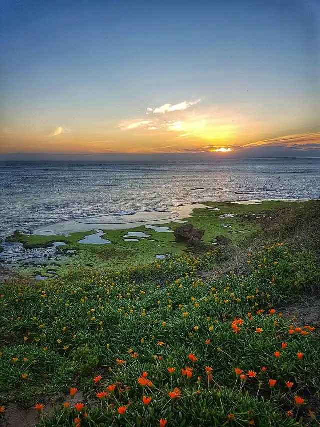

Sorrento Ocean Beach
Sorrento Ocean Beach is a beach in Sorrento, in the Mornington Peninsula Shire Council area, good for all ages. Melbourne Rd/Ocean Beach Rd (bus) is a 13-minute walk away and the nearest public toilet is about 337 m away.


Quick facts
- Toilets
- 337 m away
- Public transport
- Melbourne Rd/Ocean Beach Rd, bus (routes 788), 13 min walk
Details
- Toilets
- yes (Parks Victoria)
- Food
- on site (Parks Victoria)
Questions parents ask
- Where is Sorrento Ocean Beach?
- Sorrento Ocean Beach is in Sorrento, Victoria.
- Is Sorrento Ocean Beach free?
- Yes. It is a public beach, free to visit.
- Are there toilets at Sorrento Ocean Beach?
- The nearest public toilet is about 337 m away.
- How do I get to Sorrento Ocean Beach by public transport?
- The closest stop is Melbourne Rd/Ocean Beach Rd (routes 788), a 13-minute walk.
Nearby places
- St Pauls Beach
Beach · SorrentoFree
- Pioneer Memorial Gardens
Park · SorrentoToilet nearbyFreeBus 2 min walk
- Spunner Court Reserve
Park · SorrentoFreeBus 6 min walk
- The Rasqi
Cafe or restaurant · SorrentoToilet nearbyBus 1 min walk
- Playground at David MacFarian Reserve
Playground · SorrentoToilet nearbyFreeBus 2 min walk
- Fish Fetish
Cafe or restaurant · SorrentoToilet nearbyBus 2 min walk
- Diamond Bay Beach
Beach · SorrentoFreeBus 10 min walk
- Skate park on Melbourne Road
Skate, BMX or pump track · RyeToilet nearbyFreeBus 2 min walk